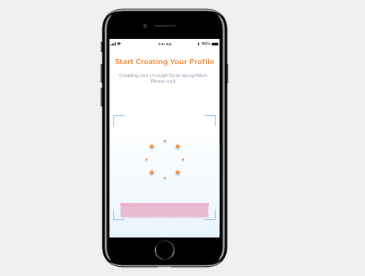
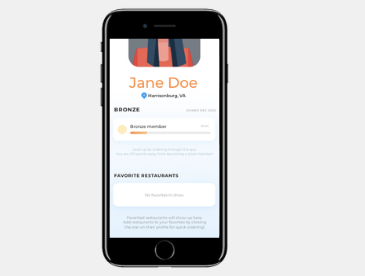
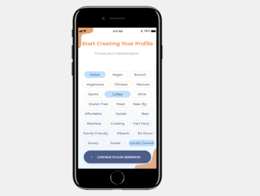
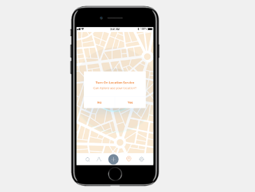
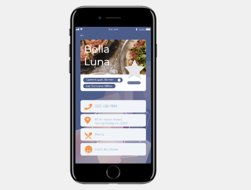

Xplore
The hub to your grub.
The Task
Many small businesses recently had to endure layoffs, closures, and a period of exasperating uncertainty due to the ongoing CoronaVirus pandemic. As businesses begin to reopen, the question remains on how to get more people to support local small businesses. Xplore aims to provide relief to local businesses in the Harrisonburg area by connecting its users to restaurants in the downtown area.
Design Decisions
Color
The initial color pallet for Xplore was chosen with color psychology in mind, specifically color psychology in food marketing. Red is a color commonly utilized in fast food marketing. I wanted to steer away from the fast-food feel, as the purpose of Xplore is to persuade users to eat locally, not at a fast-food joint.
I narrowed the colors down to yellow and orange, as it is reported that they both can induce the feeling of hunger. However, when an early version of the prototype was examined by Stark, Stark determined that yellow would not read well for someone with vision impairments. Thus, shades of orange were chosen to build the color palette around.
Accessibility
The app itself was designed with the help of Stark to ensure the application is accessible.
- All storyboards of Xplore were examined by Stark’s programs to guarantee color contrast for those with vision impairments.
- Montserrat was chosen as the primary font as it is considered by Stark to be easy to read on a digital format.
- In addition to the visuals, voice search is also enabled to limit the need for typing. This can be beneficial to those who would prefer an auditory experience rather than a visual one.
Key Features
Hover over an image to read a description!
-
View Description

Avatar Generator
Early on in the design process, I was frustrated with the lack of personalization offered in my initial design of the profile page. I came up with the idea to add a way for users to make an avatar of themselves. The avatar allows users to show their personality while having some fun within the application. Xplore can utilize facial recognition to scan a user’s face and generate an avatar. The scanning process typically takes two to three seconds. This was one of the later additions during the design process, but it adds a layer of interactivity that was previously missing within the app.
-

-

-
View Description

Voice Search Feature
To utilize voice search, users simply hold down the spacebar and say what they are looking for. The voice search features makes it easy for people with visual impairments to navigate the application.
-
View Description

The Map
Users can find nearby restaurants via the map. First time users will be asked to turn on location services so Xplore can more accurately pinpoint nearby restaurants. Once location services are turned on, nearby restaurants will be shown on the map. By clicking the blue location markers, users can view the nearby restaurant's profile.
-
View Description

Restaurant Profiles
Each restaurant profile provides users with useful information such as current wait-times, the phone number and location of the restaurant, the restaurant's menu, and an option to start an order. Restaurant profiles also have a star which, when clicked, can add the restaurant to a user's favorites and save it to their profile.